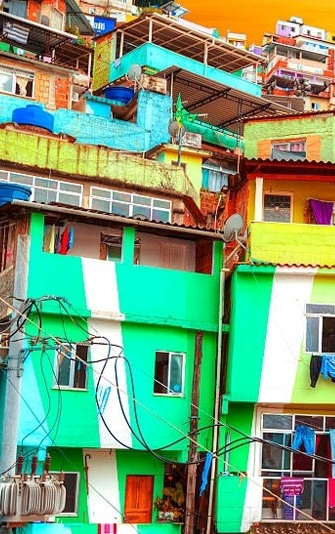

Curiosidades

A maioria das escolas de samba ficam nas favelas cariocas
Que o carioca adora um carnaval não é novidade para ninguém, atraindo cerca 2,7 milhões de foliões apenas no centro, mas uma curiosidade muito legal é que a maioria dos blocos e escolas de samba são provenientes de comunidades.
O Rio de Janeiro tem o Céu mais Azul do mundo
O céu do Rio de Janeiro, uma imensidão azul que se transparece ao encontro do mar e da vida aos cartões postais e paisagens deslumbrantes.
A Baia de Guanabara possui mais de 100 ilhas
A Baía de Guanabara é plano de fundo para cartões postais como o Pão de Açúcar do Cristo Redentor e da Praia de Copacabana.